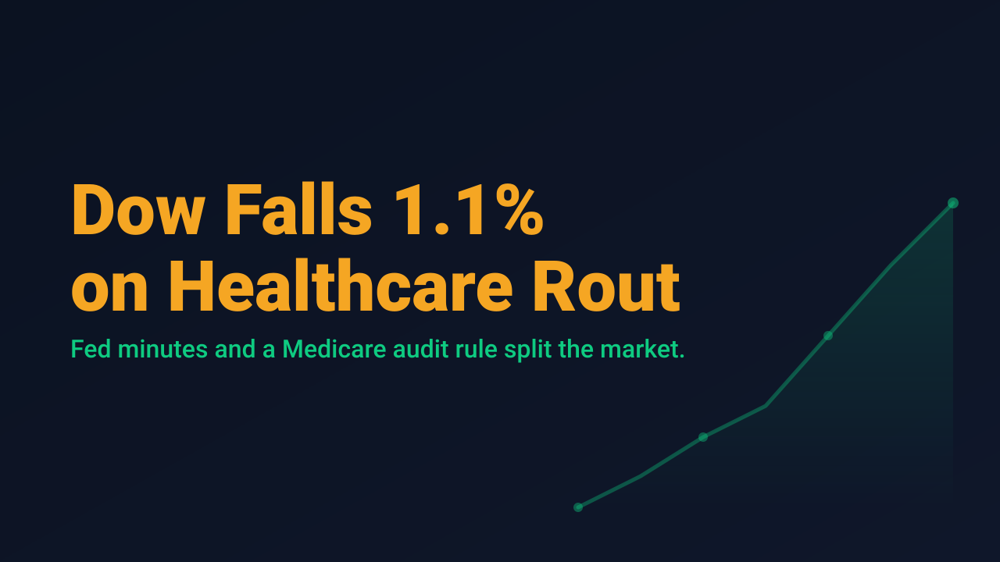
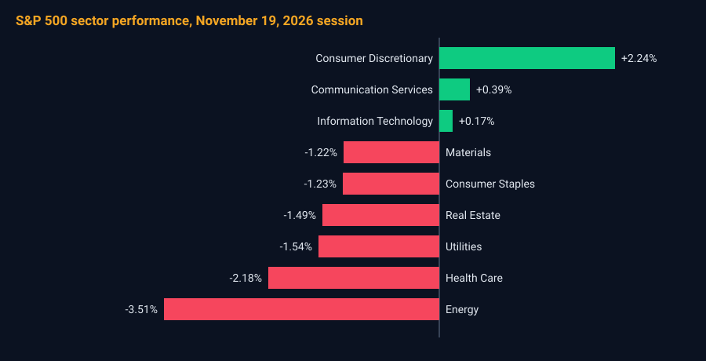

Dow Falls 1.1% on Healthcare Rout

The Dow Jones Industrial Average closed at 50,198.17, down 561.25 points or 1.11%, while the S&P 500 slipped 0.23% to 7,323.63 for a fifth consecutive daily decline. The Nasdaq Composite bucked the trend, gaining 0.42% to 24,429.88, and the Russell 2000 rose 0.46% to 2,714.31. The divergence between the price-weighted Dow and the technology-heavy Nasdaq is the central feature of the session, and it traces largely to a single stock.
UnitedHealth Group fell more than 10%, the steepest decline in the Dow, after investors digested a proposed Centers for Medicare and Medicaid Services rule known as CRUSH. The draft would expand audits of Medicare Advantage insurers and require repayment of overpayments. Humana and Elevance Health also fell sharply. The rule is not final; the public comment period runs until January 19, 2027, and some analysts expect legal challenges. Because of the Dow's price weighting, one large drop in a single constituent can dominate the headline index even when the broader market is roughly flat.
The second driver was the Federal Reserve. Minutes from the October meeting showed nearly all participants judged that further rate increases could be appropriate, and Governor Christopher Waller said a half-point increase may be necessary at the December 8 to 9 meeting. The 10-year Treasury yield remained just above 5%. Energy was the weakest S&P 500 sector, down 3.51%, as West Texas Intermediate crude traded near $83, while consumer discretionary led with a 2.24% gain, helped by Amazon and Disney.

For swing traders, the sector spread matters more than the index close. A 5.75 percentage point gap between the best and worst sectors, with healthcare down 2.18% and energy down 3.51%, indicates that selling was concentrated rather than broad. The VIX, at roughly 24.5, eased slightly during the session and does not by itself signal indiscriminate de-risking. Nvidia, meanwhile, fell for a fifth straight session, a reminder that leadership names can lag even when the Nasdaq holds up.
Several of these threads remain unresolved: the comment period on the CMS proposal, the December Fed decision, and whether the Nasdaq can keep diverging from the Dow and S&P 500. Disciplined traders will treat today's concentrated moves as information about where risk is being repriced, not as a verdict on the whole market.